Steps of Configuring Windows 7 Task Scheduler for Ingestion Upload Tool
Step 1: Open Windows 7 Control Panel, and click on "System and Security"
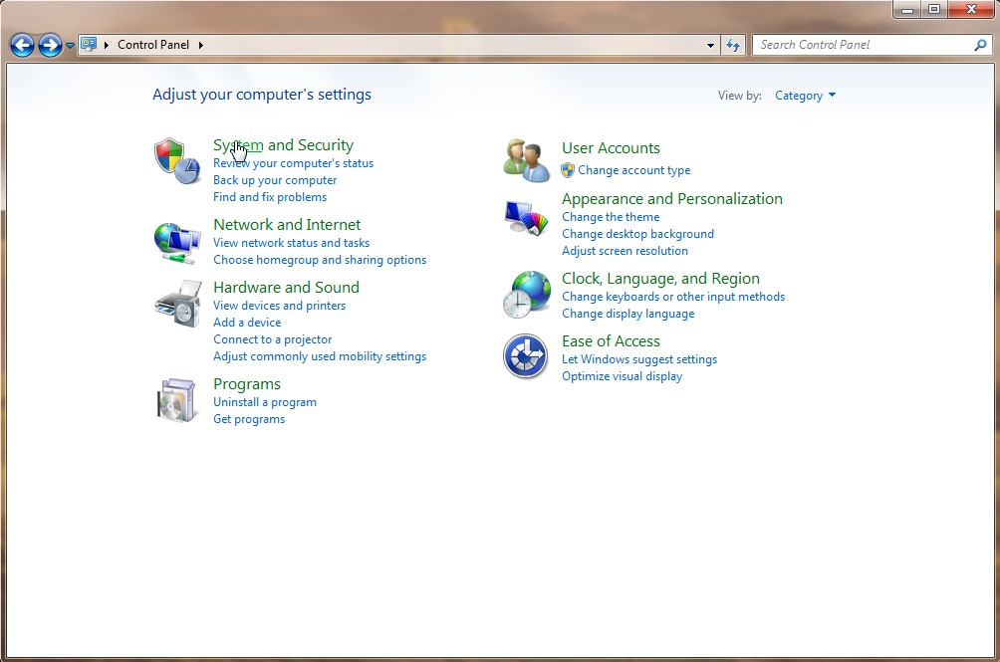
Step 2: Click on "Schedule tasks" under the "Administrative Tools" group
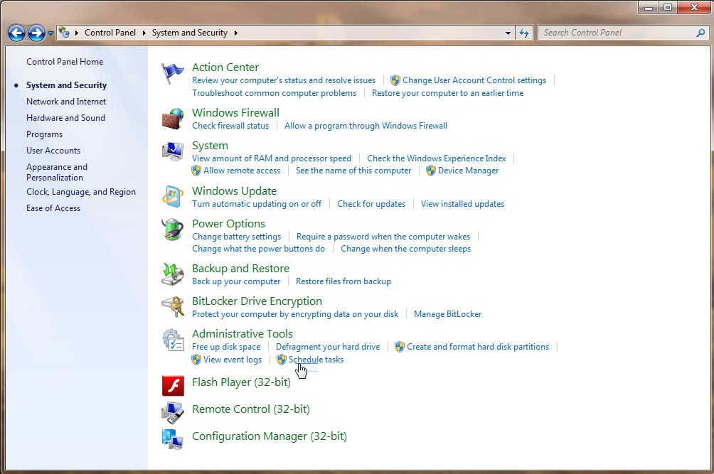
Step 3: Click on "Create Basic Task..." under the "Task Scheduler Library" of the right "Actions" panel
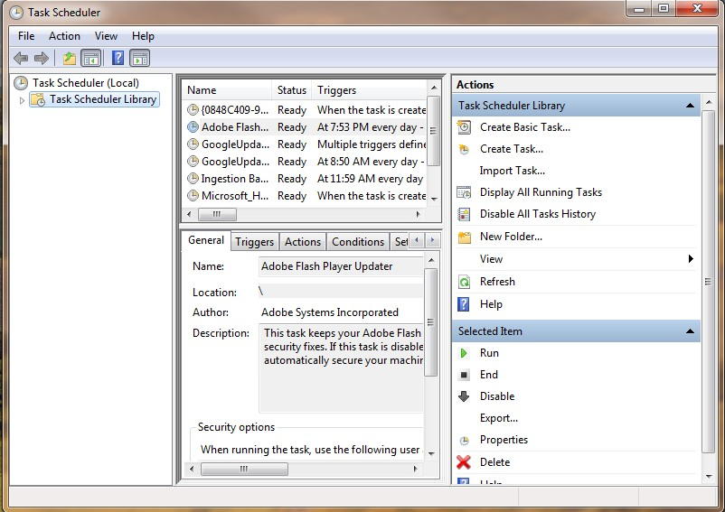
Step 4: Type a name for the task schedule in the "Name" field, for example, IngestionBatchSchedule. Then Click on the "Next>" button
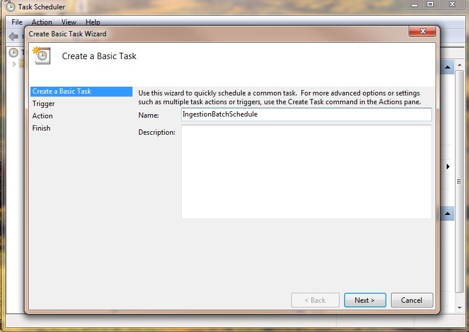
Step 5: Select a frequency trigger for the task schedule. Then Click on the "Next>" button
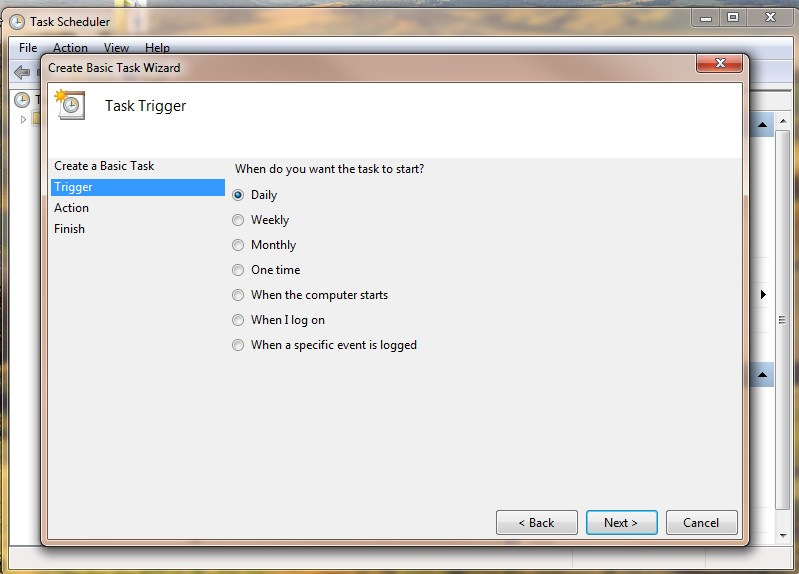
Step 6: Specify the starting date and time for the task schedule. Then Click on the "Next>" button
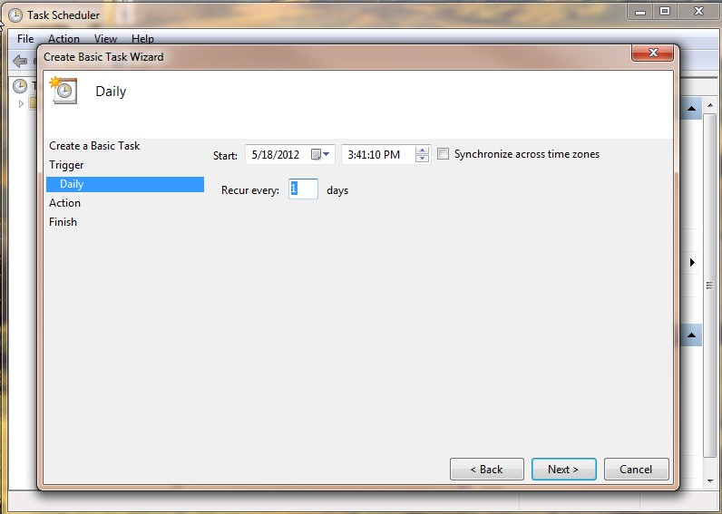
Step 7: Select "Start a progrm" as the Action for the task schedule. Then Click on the "Next>" button
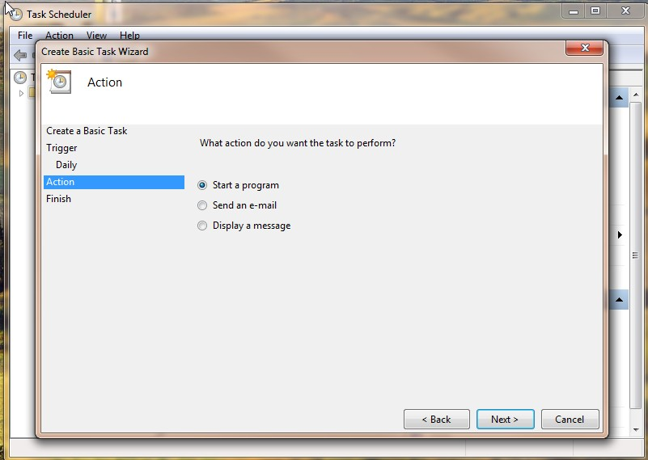
Step 8: Click on the "Browse..." button
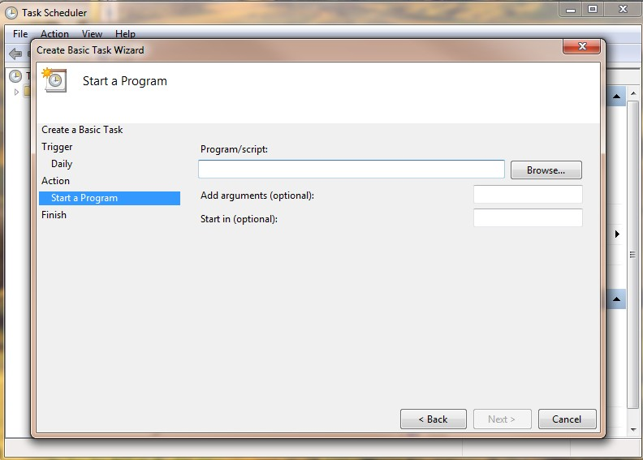
Step 9: Browse to the directory where the "ingestion-upload-tool.exe" file is located, and select the file. Then Click on the "Open" button
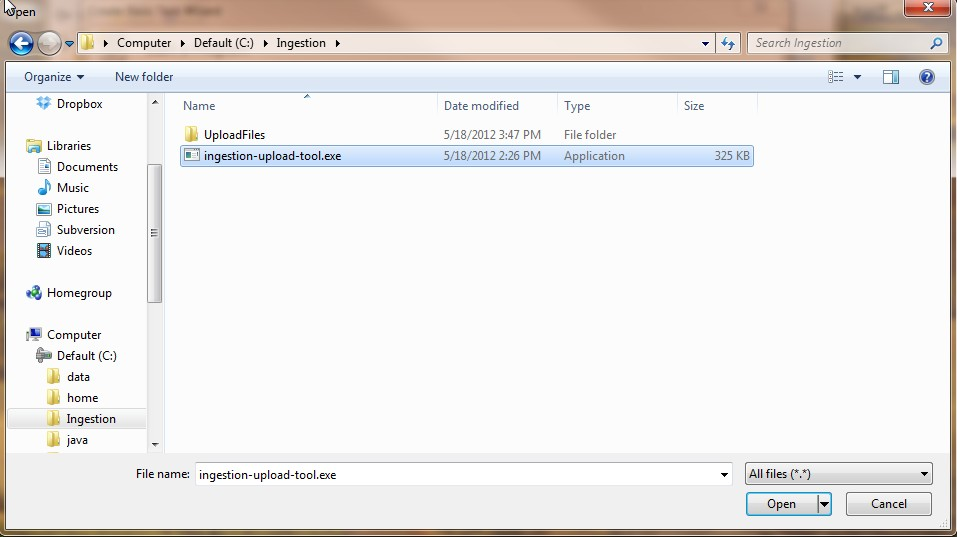
Step 10: In the "Add arguments (optional):" field, type in the necessary arguments to launch the "ingestion-upload-tool.exe" application. Then Click on the "Next>" button
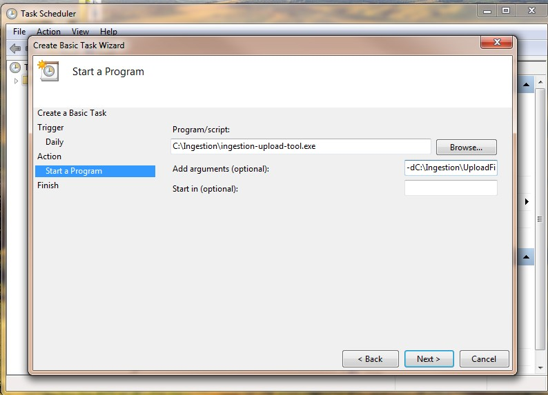
Step 11: Click on the "Finish" button
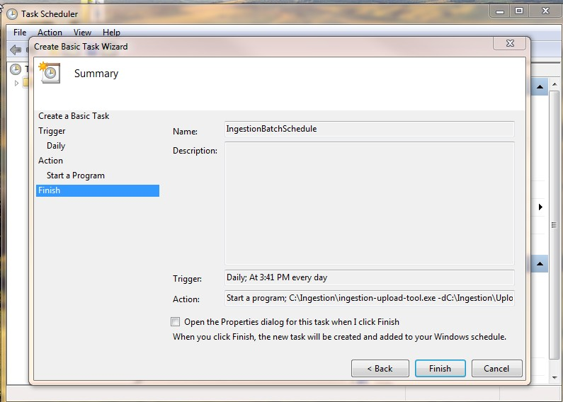
Appendix: program arguments for the "ingestion-upload-tool.exe" application:
-u username -pass password -d localDirectory -s sftpServer -port port